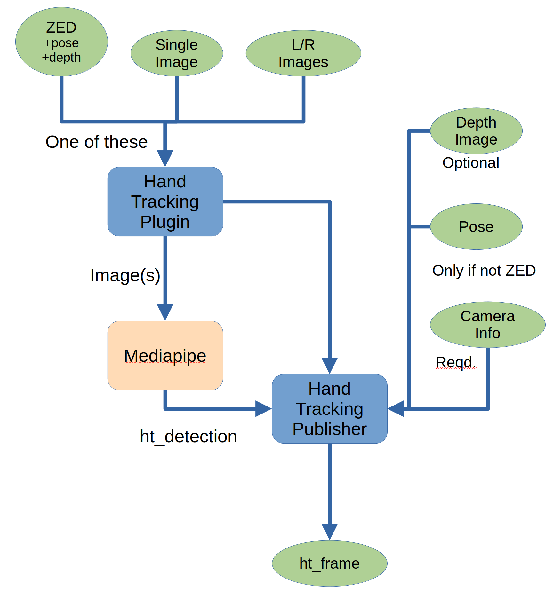

ILLIXR Hand Tracking Plugin
This ILLIXR plugin computes hand points (joints and fingertips) of any hands (max 2) that are visible in the input image(s). It utilizes the mediapipe hand detection pipeline to do the detection, then uses either supplied or calculated depth data to determine the 3D position of each point in the reference space.
Inputs
The hand tracking plugin takes a wide variety of inputs.
- image (required), single or left/right pair
- current pose (required)
- camera imformation (required) (see below) pertaining to the image(s)
- depth image (required for single image input, optional for left/right image pair)
Outputs
The hand tracking outputs a single data type: ht_frame. The detections report positions of the following points

Dependencies
This plugin has the following dependencies:
- abseil-cpp
- egl_headers
- farmhash
- fft2d
- flatbuffers
- gemmlowp
- neon_2_sse
- ruy
- pthreadpool
- XNNPACK
- tensorflow-lite
- protobuf (version 3.19)
All of these dependencies are packaged in the hand_tracking_dependencies repo, and are installed automatically (if needed).
This plugin has the following dependencies which are provided by operating system repos:
- libcpuinfo
- libgles
- fp16
Hand Tracking Process
The image below shows the hand tracking flow.

Here I will refer to the two plugin components as hand tracking plugin (plugin) and hand tracking publisher ( publisher)
- When the publisher starts up it gets the camera information from the switchboard
- One of these is input to the plugin
- ZED image (L & R images, pose, depth image)
- Single (monocular) image
- L/R image pair (binocular)
- The plugin takes the raw images and sends them to the mediapipe pipeline
- The plugin sends the raw images and any pose and depth information from the ZED to the publisher. (the raw images may not be necessary and may not be sent in the future)
- The publisher waits for output from the mediapipe pipeline
- When the publisher receives output it gets the current pose and depth images from the switchboard (this is not done if the input was from the ZED). A pose is required, but the depth image is optional, unless the input was a single image.
- The publisher iterates through the detected hand points a. converting them from percentage (of image size) to pixel b. using the depth and camera information the pixel values are converted to mm, relative to the camera's center (if no depth information is input, then the publisher uses parallax calculations from the L/R images to determine distance) c. using the pose, these x, y, z values are converted to real-world coordinates
- The publisher sends a ht_frame to the switchboard
Environment Variables
The hand tracking utilizes the following environment/yaml file variables to control its processing:
- HT_INPUT: the type of images to be fed to the plugin. Values are
- zed
- cam (for typical cam_type/binocular images)
- webcam (single image)
- HT_INPUT_TYPE: descriptor of what image(s) to use. Values are
- LEFT - only use the left eye image from an input pair
- SINGLE - same as LEFT
- RIGHT - only use the right eye image from an input pair
- MULTI - use both input images
- BOTH - same as MULTI
- RGB - only a single input image
- WCF_ORIGIN: the pose of the world coordinate system as a string of 7 numbers denoting x, y, z, w, wx, wy, wz
OpenXR Interface
This plugin can be built with an OpenXR API Layer, which will be auto-detected by the OpenXR loader. It
has been tested with the Monado XR runtime, but should work with any runtime and application. Due to the way
OpenXR, treats hand tracking, you will need to be running ILLIXR with the hand tracking plugin and at least one other
plugin to feed data to the hand tracker. Essentially, ILLIXR is acting like a device from Monado's standpoint. To enable
the OpenXR interface, add -DBUILD_OXR_INTERFACE=ON to your ILLIXR configuration command line.
Download and Installation
This code should only be downloaded, compiled, and installed inside the ILLIXR system by enabling the hand_tracking plugin.